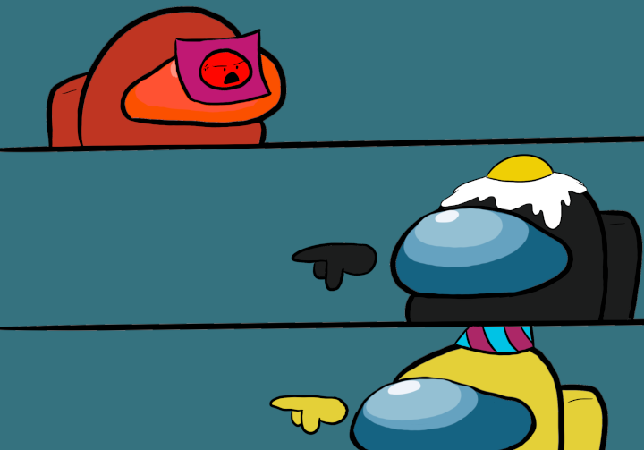

Second Discussion
 You decide to tell everyone where you had found the body first.
You : So I found Purple's dead body in the Oxygen Room. His little buddy was sitting next to his body, the sight made me shed a tear :(
Orange : I want to say that I was in the camera room, and I did see Red walk away from the Oxygen room. There's a good chance that it is him and now Black.
Red : Now hold on a second, how do you know it's me and not Black? He was also in that room!
Orange : Are you really arguing with the dude on the cameras? Everyone, let's vote him off. We all know Black is innocent.